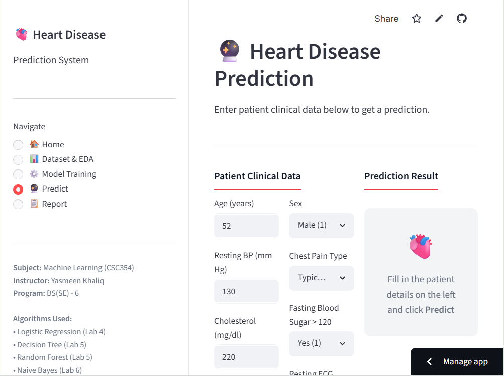
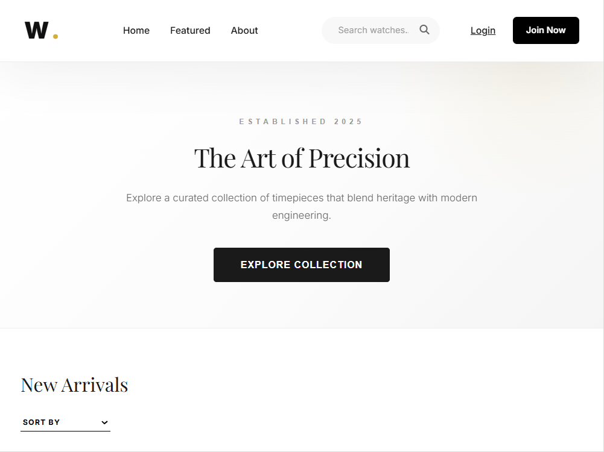
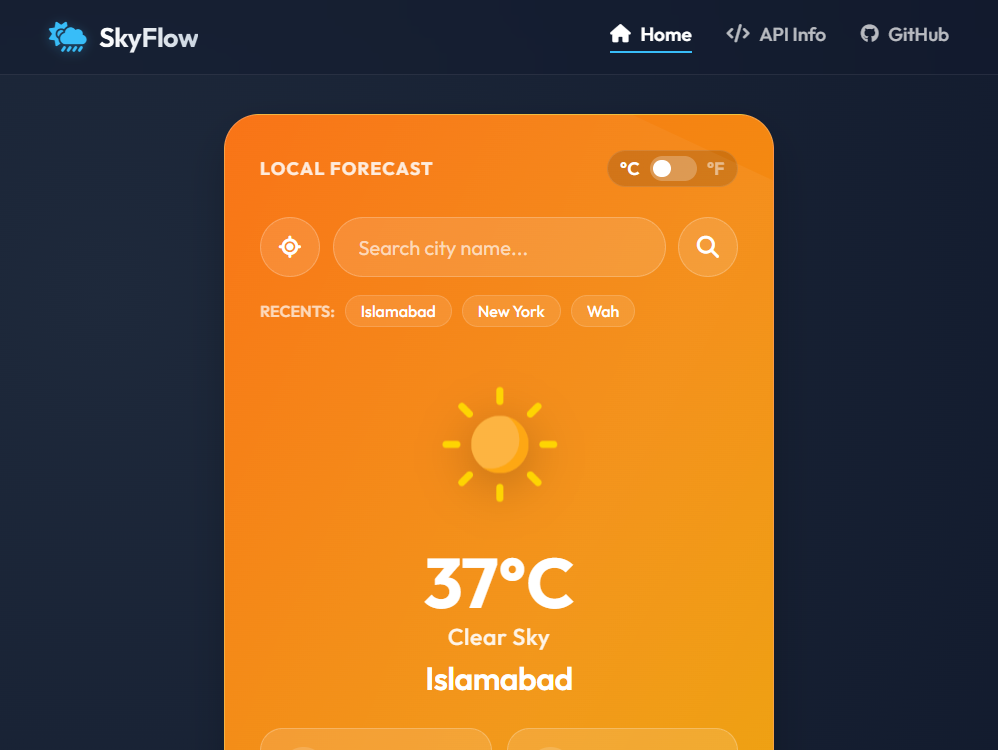
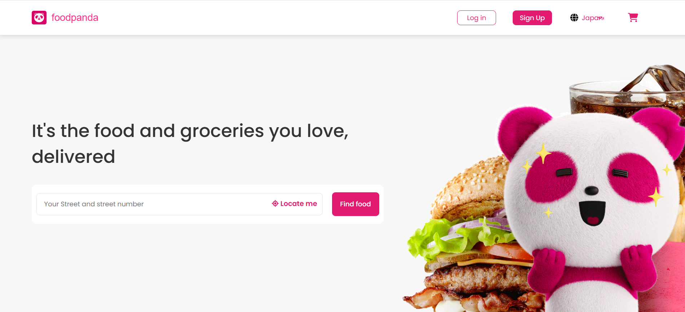

My Work
Explore a curated selection of engineering projects, ranging from mobile ecosystems to predictive machine learning models.

Pocket Journal
A secure, offline-first personal diary app built with Flutter and local persistence. Available on Google Play Store.

Carpool App
Real-time ride-sharing platform with complex geo-spatial queries and live tracking.

Heart Disease Predictor
Predictive analysis model with 96.6% accuracy using Random Forest. Live Streamlit demo available.

Fake News Predictor
NLP-based classifier with TF-IDF and 3 ML models. Live Streamlit dashboard for testing.

Watchify Store
Full-featured Laravel e-commerce with product management and admin dashboard. Deployed on Railway.

Weather App
Real-time weather with OpenWeatherMap API, geolocation, and premium glassmorphism UI design.

Food Panda Clone
A high-fidelity front-end clone of the Food Panda web application with responsive design and modern styling.